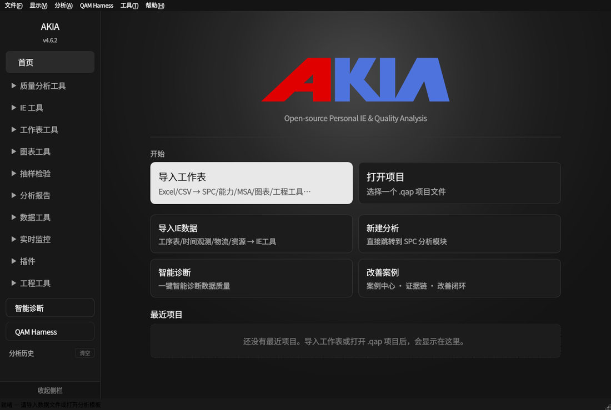
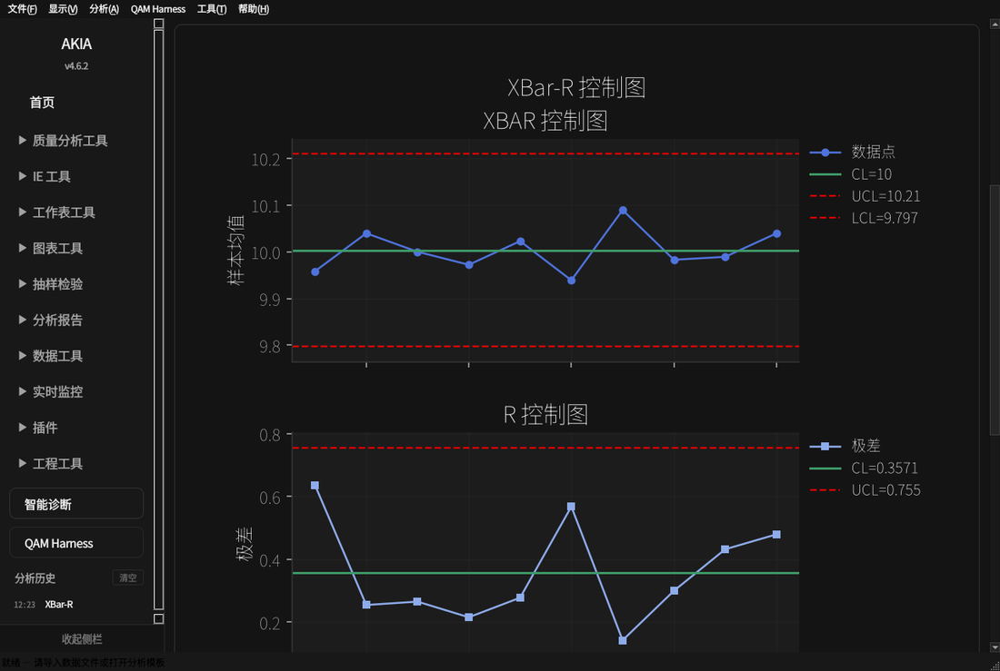
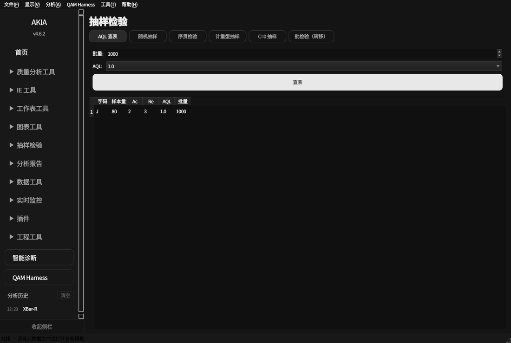

先做出第一张图
AKIA 在本机离线运行，不需要账号。界面是黑、白、灰。下面每条路径都按同一顺序写：点哪里、屏幕上有什么、做完得到什么。
四条起步路径
1. 打开软件
点启动 AKIA。Linux 运行 AKIA-4.6.2-x86_64.AppImage；Windows 从开始菜单打开。
看到左侧深灰侧栏，右侧欢迎页。欢迎页中间是字标，下面是「开始」。
结果还没有分析。用下面的卡片导入、打开项目，或直接做抽样查表。

2. 导入工作表，或打开已有项目
点欢迎页「导入工作表」，或菜单「文件 → 导入工作表」（Ctrl+O）。已有项目则点「打开项目」，或菜单「文件 → 打开项目 (.qap)」。
看到文件选择框。工作表认 Excel / CSV。项目文件扩展名是 .qap。
结果工作表进入当前数据。状态栏显示文件名。之后打开的分析页会带上这份数据。IE 工时用「导入 IE 数据」，数据库用「导入数据库」。
列名用测量值本身，例如「直径」。一张表可以有多列，分析时再选要用的列。
3. 做一张 SPC 控制图
点欢迎页「新建分析」，或侧栏「质量分析工具 → SPC 控制图」。
看到页顶是控制图类型、测量列、子组大小。默认类型是 XBar-R，子组大小 5。需要规格限时再勾选并填写 USL / LSL。
点「运行分析 (F5)」。
看到结果区没有「图表 / 数据」开关。控制图横贯上方。图下方左侧是「图表选项」，右侧是文字结论和数值表。页面只有一根滚动条；鼠标在图上滚动时滚动的是页面，按住 Ctrl 再滚动才缩放图表。
结果图上有数据点、中心线 CL、控制限 UCL / LCL。右侧表写出同样的数值。点超出控制限时，图上会标出判异点。

4. 不导入数据，先查抽样方案
点侧栏「抽样检验」。页顶保持「AQL 查表」。
看到批量默认 1000，AQL 默认 1.0。
点「查表」。
结果下方表格给出字码、样本量、接收数 Ac、拒收数 Re。例如批量 1000、AQL 1.0 时，字码 J，样本量 80，Ac 2，Re 3。随机抽样、序贯、计量型和 C=0 用同一排按钮切换，结果仍出现在这张表里。

界面上这几处就够用
| 位置 | 做什么 |
|---|---|
| 侧栏 | 分组是质量分析工具、IE 工具、图表工具、抽样检验等。点分组再点具体页。底边「收起侧栏」或 Ctrl+B 把侧栏收成一条。 |
| 分析页 | 上面是参数和数据表，下面是结果。结果里图在上；有选项时在左，文字和表在右。空的那一块不占位置。 |
| 菜单 | 文件：导入、打开和保存 .qap、导出报告。工具：设置、批量调度、数据清洗、产线配置 (plant.json)、告警中心、连接器健康、实时看板。帮助：使用指南（F1）。 |
| 显示模式 | 菜单「显示 → 显示模式」或 F11，把当前图放到大屏上。 |
分析模板与批量
点菜单「文件 → 导入分析模板」。
看到一份 JSON 或 Excel。JSON 可以是 .json，Excel 可以是 .xlsx / .xls / .xlsm。
结果模板里的每一项分析按写好的列名和规格限跑完。多个模板排队用菜单「工具 → 批量调度」。格式说明也可以在菜单「帮助 → 模板格式说明」里看，那里的类型清单与软件一致。
一份最小的 JSON
{
"analyses": [{
"analysis_type": "xbar_r",
"data_sheet": "Sheet1",
"measurement_column": "直径",
"subgroup_size": 5,
"usl": 10.5,
"lsl": 9.5
}]
}
也可以只写一个 analysis 对象，或把 analysis_type 放在最外层。Excel 则每个 Sheet 是一项分析：A 列参数名，B 列参数值。
可用分析类型（25 种）
| 类别 | analysis_type |
|---|---|
| 控制图 | xbar_r xbar_s imr p_chart np_chart c_chart u_chart |
| 过程能力 | normal_capability non_normal_capability between_within_capability |
| MSA | gage_rr_crossed gage_rr_nested linearity_bias attribute_agreement |
| 假设检验 | t_test_1sample t_test_2sample t_test_paired anova_oneway anova_twoway normality_test variance_test |
| DOE | factorial_design response_surface doe_analysis box_behnken |
必填字段是 analysis_type、data_sheet、measurement_column。可选：subgroup_size、usl、lsl、target、confidence_level。写了表外的类型时，软件会提示不支持的分析类型。
模块总览
侧栏分组如下。点分组，再点页面。
质量分析工具
| 页面 | 做完能看到 |
|---|---|
| SPC 控制图 | XBar-R/S、I-MR、P/NP/C/U、CUSUM、EWMA、Laney、Hotelling T²，以及判异点 |
| 过程能力 | Cp、Cpk、Pp、Ppk 和直方图 |
| MSA | Gage R&R、偏倚、线性、属性一致性 |
| 假设检验 | t 检验、ANOVA、卡方等的统计量和结论 |
| 实验设计 (DOE) | 设计表、效应和 Pareto |
| 回归分析 | 拟合、R² 和残差图 |
图表工具
图表构建器、趋势、能力对比、汇总面板。在图表构建器里点缩略图切换类型，再点运行。
IE 工具
时间研究、工作抽样、线平衡、OEE、VSM、人机作业、标准作业组合、SMED、TPM。工时数据用「文件 → 导入 IE 数据」，不要和普通工作表混用。
工程工具
可靠性、鱼骨图、柏拉图、FMEA、控制计划、8D、PPAP。鱼骨图在图上直接改文字；8D 和 PPAP 按步骤填表。
看结果
- 图在结果区最上，宽度跟页面走。
- 图下面左边是图表选项（字号、网格、控制限）。改完图表会刷新，不用再点运行分析。
- 右边是文字结论和数值表。没有文字或没有表的页面，那一侧不出现空框。
- 图上右键可以保存 PNG 或 SVG。整份结果用菜单「文件 → 导出报告」。
选项随项目文件 .qap 保存。下次打开项目，图和选项一起回来。
导出
点菜单「文件 → 导出报告」，选 Word、Excel、PDF、PowerPoint 或 HTML。
看到保存对话框。
结果已运行的分析写进一个文件。要连数据一起留着，用「文件 → 保存项目 (.qap)」。
菜单「工具 → 报告模板」按质量日报、月报、8D 或 PPAP 的版式出文。合规输出在导出报告的合规子菜单里。
QAM Harness
点菜单「QAM Harness」，或侧栏底部同名按钮。
看到一个独立对话窗口。没配模型时，仍可用离线工具模式：它调用软件里的同一套统计，给出数值和判定。
结果对话里出现工具卡片和结论。本地模型用 Ollama。云模型在「工具 → 设置 → QAM Harness」里填写密钥；第一次调用会先问你是否允许把问题和摘要发出去。原始数据表和密钥不会发送。
实时看板
点菜单「工具 → 实时看板」。需要先安装 requirements-server.txt 里的依赖。
看到浏览器里的产线画面：控制图、工位灯、OEE。右上角 A− / A / A+ 改变字号，A+ 适合车间大屏。
结果设备数据进来之后，判异和超规格会着色。规格限来自产线配置。
- 菜单「工具 → 产线配置 (plant.json)」编辑产线、工位、通道、USL、LSL、节拍和班次。
- 菜单「工具 → 连接器健康」查看 Modbus、MQTT、OPC-UA 等数据源，并可重连。
- 菜单「工具 → 告警中心」筛选、确认和导出告警。
- 原始点保留天数是
ts_raw_retention_days，聚合数据是ts_rollup_retention_days。 - 在用户配置里设置
dashboard_token后，打开看板要带这个令牌。
硬件
点菜单「工具 → 设置」，启用设备扩展，接上 ESP32 或 MaixCAM。
看到侧栏「实时监控」里的设备页。
结果采集值进入实时控制图。烧录方法以设备附带说明为准。
安装
| 文件 | 怎么打开 | |
|---|---|---|
| Linux | AKIA-4.6.2-x86_64.AppImage | chmod +x 后直接运行。可用附带的 .sha256 核对文件。 |
| Windows | AKIA-Setup-4.6.2.exe | 双击安装。安装程序会加入开始菜单。 |
不需要单独安装 Python，也不需要联网。
常见问题
导入之后分析页还是空的
图下面只有一半，另一半在哪
滚轮把图缩放了，页面不动
怎样留下这次分析
模板报不支持的分析类型
analysis_type。帮助菜单里的模板格式说明与这一份清单相同。支持
缺陷和功能建议走项目的 GitHub Issues。安全问题用私密漏洞报告，不要贴在公开问题里。
AKIA is open source under the Apache License 2.0.